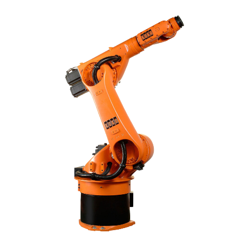

Robô Kuka
O conceito de robô KUKA abrange um leque de robôs industriais e sistemas de automação desenvolvidos pela empresa alemã KUKA, que se destacam pela sua versatilidade, precisão e automação de tarefas complexas e repetitivas.

Adptado de: Robô Kuka
Os robôs da KUKA funcionam a partir da interação entre um sistema mecânico (o braço robótico) e um sistema de controle programável.
Zugspitzstrabe 140, 86165 Augsburg, Alemanha